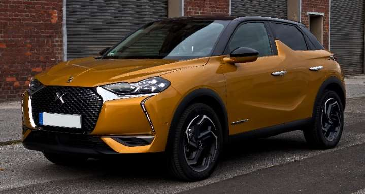
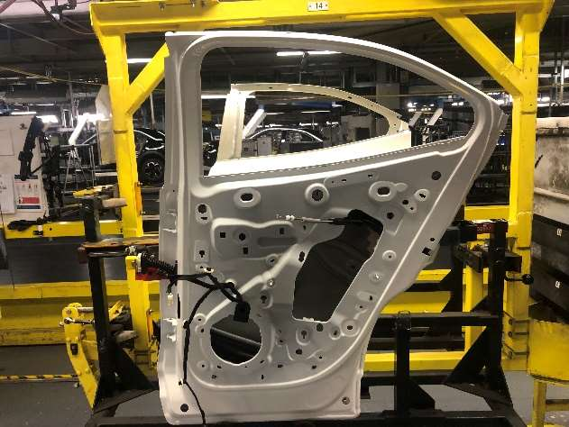

Stage ouvrier de deux mois sur la chaîne de montage des portières, à l'usine Stellantis de Poissy (juin – juillet 2024) : discipline, cadence industrielle et découverte du monde ouvrier.
Stellantis, né en 2021 de la fusion entre PSA et Fiat Chrysler, est le 6e constructeur automobile mondial. Le site de Poissy, l'un des principaux pôles de production du groupe en France, fabrique la DS3 et l'Opel Mokka sur une ligne de montage de 800 mètres organisée en trois équipes, pour une production quotidienne d'environ 210 véhicules.


Affecté à la chaîne de production des portes, j'étais chargé de fixer manuellement le câblage électrique des portières (bouton de vitre, enceinte audio, mécanisme de montée-descente), puis, au fil du stage, la serrure, l'étanchéité et les finitions. Chaque tâche devait être exécutée dans un temps très contraint (environ 40 secondes pour une porte arrière, 60 pour une porte avant) avant l'arrivée du véhicule suivant, avec pour chaque geste une exigence de précision : une serrure mal positionnée, par exemple, compromet directement la sécurité du véhicule.
Alterner chaque semaine entre les horaires du matin (5h20) et de l'après-midi a été l'aspect le plus éprouvant du stage, tout comme la station debout prolongée et la répétition des gestes. J'ai aussi pu observer de près le rôle des syndicats dans l'usine, échanger avec des ouvriers aux parcours très divers, et mesurer l'importance de la sécurité au quotidien, un sujet pris très au sérieux sur le site, notamment après un accident mortel survenu la même année dans une autre usine du groupe.
Ce stage m'a confronté à une réalité du travail que je ne connaissais qu'en théorie : la fatigue physique, la pression de la cadence et l'exigence de précision sous contrainte de temps. J'y ai aussi trouvé une vraie richesse humaine, à travers la diversité des parcours et des origines de mes collègues, et compris à quel point la bonne entente et l'entraide entre ouvriers sont essentielles pour tenir un rythme de production aussi soutenu.